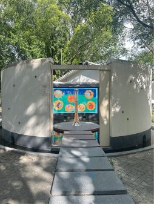
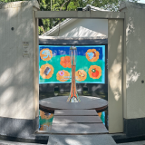
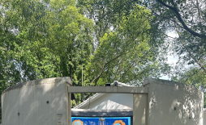
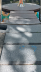

灵性、干净、清爽 整体的环形给人一种仪式感 虽然是夏天但是很凉爽的感觉 有点像观夏的线下店的调性
2025.6，上海的一个文创园
G1 艺术与建筑 → left [S_overlap_F1]
G2 自然与清爽 → right [S_overlap_F2]
G3 静谧空间 → bottom-left [S_image_F3]
画布: 1259 × 804 px
规划耗时: 30676.13 ms
OmDet: 5 个检测 (bench, desk, table, truck, umbrella)
S_image_F3 crop: [90,200]-[160,337] 来源=llm 匹配=无
S_overlap_F1 crop: [50,100]-[200,250] 来源=llm 匹配=无
S_overlap_F2 crop: [0,0]-[254,150] 来源=llm 匹配=无